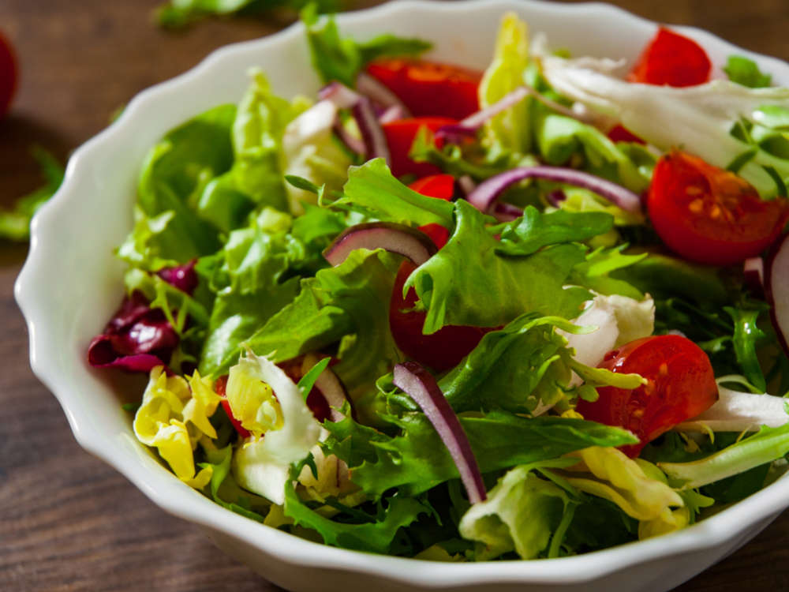

Овочевий салат
Час підготовки: 15 хвилин
Час приготування: 5 хвилин
Кількість порцій: 4
Інгредієнти
- 2 огірки
- 2 помідори
- 1 болгарський перець
- 1 червона цибулина
- 100 г листя салату
- 3 ст. л. оливкової олії
- 1 ч. л. лимонного соку
- Сіль та перець за смаком
Інструкції
- Помийте та висушіть всі овочі та листя салату.
- Наріжте огірки, помідори та перець кубиками, а цибулю — тонкими півкільцями.
- Викладіть овочі у велику миску, додайте порване руками листя салату.
- Змішайте оливкову олію, лимонний сік, сіль і перець у маленькій мисці.
- Заправте салат, акуратно перемішайте та подавайте свіжим.